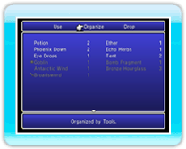

15 |
"Items" (Objetos) |
 |
|
Este menú te permite gestionar los objetos que hayas recogido durante la aventura. Primero, selecciona "Use" (Usar), "Organize" (Organizar) o "Drop" (Soltar) en el menú superior. Tras seleccionar "Use" (Usar) o "Drop" (Soltar), mantén pulsado ● "Use" (Usar)Selecciona un objeto resaltado en blanco y pulsa

● "Organize"(Organizar) Te permite reorganizar el inventario siguiendo un orden determinado. Cada vez que elijas esta opción, tus pertenencias se reorganizarán para mostrar primero los objetos, las armas o las armaduras.
● "Drop" (Soltar)Selecciónalo para desechar objetos. Elige el objeto que quieras soltar y pulsa |
 |
 |
 |